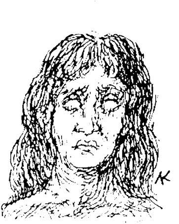

İnsan, kendinin farkında olmadıkça bir hiçtir.
Julius Bahnsen
Klinikte, kendimi sürekli o heybetli gösterinin yarattığı büyünün etkisini düşünür halde buluyordum. Rüyalarımı kontrol eden güçte kesinlikle bir sorun vardı, çünkü artık aklımı aşmışlardı.
Rüyalarımda kimliğimi kaybediyordum. Genellikle tarihsel anlarda geçiyorlar, her gece daha eski zamanlara gidiyordum. Bu rüya imgelerinin atalarımı etkilemiş olan şeylerle bağlantılı olduğu benim fikrimdi; onların travmatik tecrübeleri organizmalarına işlemiş ve sonraki nesillere geçmiş olabilirdi. Bir hayvanın hayat akışına çekildiğimde ya da zihnimin asli bir maddede dolaşmasına izin verdiğimde rüyaların daha da derin seviyeleri açılıyordu. Bu rüyalar, karşı koyamadığım, sonsuz uçurumlar gibiydi. Havalar düzeldiğinde bu rüyalar da kesildi ve sonunda hoş, bulutsuz geceler geçirdik.
Günler tekdüze bir şekilde geçti. Yeni işkencem hareketsizlik ve sıkıntıydı. Gücümü toplamayı ve yeniden çalışmaya başlamayı umuyordum, fakat artık hiçbir işe yaramadığımı fark ettim. Gerçeklik, Rüya Ülkesi’nin müstehcen bir karikatürü gibiydi.
Beni neşelendiren tek şey ölüm düşüncesiydi ve ona içimde kalan son tutkuyla sarılıyordum. Kendimi vecit halinde ona veriyordum, bir kadınmışım gibi kendimden geçiyor, ayışığıyla aydınlanan gecelerde kendimi tamamen onun kollarına bırakıyor, onu izliyor, onu hissediyor ve bu dünyanın ötesindeki zevkleri tadıyordum. Ben, bu yüce efendinin, kendini ona adayanlar için güzelliği tarifsiz olan bu şanlı dünya prensinin yakın dostuydum. O benim son ve en büyük hazzımdı. Her düşen yaprakta, ıslak çimenlerde, hatta toprağın kendisinde onu görüyordum. Kendimi onun kedimsi okşamalarına bırakmak, onun yıkımını tutkulu bir kucaklama olarak hissetmek beni mutlu ediyordu. Yan solmuş çiçeklere duyulan sevgi, bu devrenin tipik bir belirtisiydi.
Kendi ölümümü düşünmek en ilahi neşeydi. Ölüm, sonsuz bir evlilik gecesinin başlangıcı olacaktı.
Her şey ona karşı koysa da o bizim için en iyi olanı istiyor! Ondan bir işaret görmek için her yüzü dikkatle inceliyor, yaşlılıkla gelen buruşuk ve kırışıklıklarda onun öpücüklerinin izlerini keşfediyordum. Her zaman farklı gözüküyordu. Her zaman yeniydi. Renkleri nasıl da harikuladeydi! Bakışlarında öylesine davetkâr bir ışıltı vardı ki en güçlü insana bile boyun eğdiriyordu. Soma pelerinini atıyor ve elmaslara özgü bir parlaklıkla, elmasın binlerce cilalı yüzünün yansımasıyla ölümlülere görünüyordu.
Yaşayanların dünyasına döndüğümde tanrımın sadece yarısının hüküm sürdüğünü keşfettim. Büyük ya da küçük olsun her şeyi, yaşam isteyen bir muhalifle paylaşması gerekiyordu. İtme ve çekim kuvvetleri, dünyanın iki kutbu ve akımları, mevsimlerin değişimi, gündüz ve gece, siyah ve beyaz - bunların hepsi birer savaştır.
Gerçek cehennem, bu karşıtlığın kendi içimizde de olmasıdır. Aşk bile “dışkı ile idrar arasına" odaklanmıştır. Yüce olan, gülünç olana alaya ve ironiye yenik düşebilir.

Demiurgos melezdir.*
* Demiurgos: Eski Yunanca'da “hakim”. Ayrıca, Platon felsefesine göre kainatın yaratıcısı.